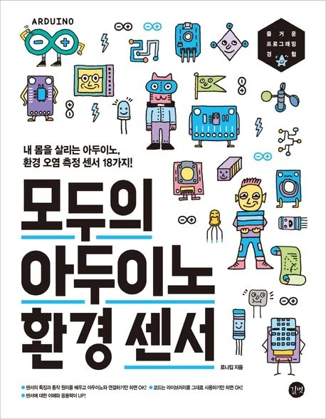

아두이노 환경 센서 실습서
아두이노와 센서로
내 주변 환경을 직접 측정합니다.
『모두의 아두이노 환경 센서』는 미세먼지, 온습도, 이산화탄소, 포름알데히드, TVOC, 방사선, 오존, 일산화탄소, 자외선, 풍속 등 생활 환경과 관련된 18가지 센서를 아두이노로 다루는 실습 중심 도서입니다.
센서를 고르는 기준, 데이터시트 읽기, 회로 연결, 라이브러리 사용, 측정값 확인, 원격 모니터링 프로젝트까지 단계적으로 연결합니다.
시중 간이측정기의 원리를 이해하고, 나만의 환경 측정기를 직접 만들어보세요.
이 책의 핵심 구성
준비
센서의 특성, 출력 단위, 인터페이스 방식, 사용 시 주의사항, 아두이노 IDE와 라이브러리 준비 과정을 정리합니다.
실전
미세먼지, 실내 대기, 실외 대기, 대기 환경 측정에 사용되는 18가지 센서를 직접 연결하고 값을 확인합니다.
프로젝트
미세먼지와 온습도 측정기를 만들고 LCD, 블루투스, Wi-Fi, RF 통신으로 모니터링하는 프로젝트를 진행합니다.
확장
센서의 동작 원리와 데이터시트를 이해해 다른 환경 측정 프로젝트로 확장할 수 있는 기준을 익힙니다.
이 책에서 다루는 18가지 센서
- 미세먼지: PMS7003, GP2Y1010AU0F, PPD42NS, SDS011
- 실내 대기: DHT22, MH-Z19B, ZE08-CH2O, CCS811, GDK101
- 실외 대기: MQ-131, MQ-7, MiCS-4514, MiCS-6814, DGS-SO2
- 대기 환경: BME280, GUVA-S12SD, MD0550, QS-FS01
이런 독자에게 적합합니다
- 아두이노로 실생활에 도움이 되는 프로젝트를 만들고 싶은 독자
- 미세먼지, 온습도, CO₂, TVOC, 자외선 등 환경 데이터를 직접 측정해보고 싶은 독자
- 센서의 사양, 특징, 동작 원리, 주의사항까지 함께 이해하고 싶은 독자
- LCD, 블루투스, Wi-Fi, RF 통신으로 측정값을 확장하고 싶은 독자
- 청소년 과학·공학, 메이커 교육, 사물인터넷 실습 자료가 필요한 독자
도서 정보
| 도서명 | 모두의 아두이노 환경 센서 |
|---|---|
| 부제 | 내 몸을 살리는 아두이노, 환경 오염 측정 센서 18가지! |
| 저자 | 로니킴 |
| 출판사 | 길벗 |
| 출간일 | 2021년 2월 28일 |
| 쪽수 | 288쪽 |
| ISBN | 9791165214852 |
| 정가 | 22,000원 |